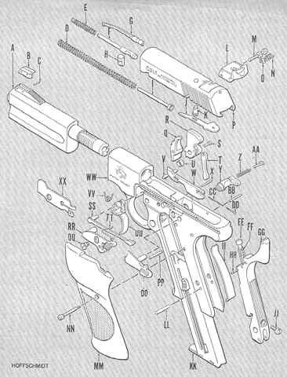

| Legend | ||
|---|---|---|
A-Barrel B-Front sight blade C-Sight blade pin D-Recoil spring E-Firing pin spring F-Firing pin G-Extractor H-Firing pin stop I-Recoil spring guide J-Assembly lock K-Assembly lock plunger L-Rear sight M-Sight windage screw N-Windage screw detent spring O-Windage detent P-Slide Q-Sear R-Hammer S-Hammer strut pin T-Hammer strut U-Bushing V-Trigger pin W-Ejector X-Ejector pin Y-Magazine catch Z-Magazine catch spring |
AA-Magazine catch lock BB-Ejector pin CC-Ejector spring DD-Ejector plunger EE-Mainspring cap FF-Mainspring GG-Mainspring housing HH-Mainspring cap pin II-Sear spring JJ-Grip adapter screw KK-Magazine LL-Housing lock pin MM-Left hand grip NN-Grip screw 00-Safety catch PP-Upper housing lock pin QQ-Side plate screw RR-Slide stop SS-Trigger bar TT-Slide stop spring UU-Trigger VV-Trigger spring WW-Frame (receiver) XX-Side plate |
 |